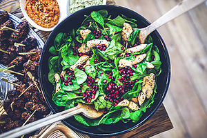

Our Best Chicken Salad Recipe
April 17, 2016 | Carla Tan
Yield: Serves 1
Total time: 25 Minutes
Ingredients
2 tablespoons chopped red onion
1 tablespoon canola mayonnaise
1 tablespoon plain 2% reduced-fat Greek yogurt
1 teaspoon fresh lemon juice
1/8 teaspoon black pepper
2 ounces chopped skinless, boneless rotisserie chicken (about 1 cup)
Preparation- Preheat oven to 400°
- To prepare pita chips, arrange pita wedges on a baking sheet;
coat with cooking spray. Combine cumin, paprika, and oregano in
a small bowl
- To prepare chicken salad, combine 2 tablespoons chopped red
onion and next 5 ingredients (through chicken) in a bowl.
- Combine chicken shreds and remaining ingredients in a bowl;
top with 1/2 cup chicken salad and remaining 6 pita chips.

|
Carla's cooking
tips
#1
If you like a bit of zing,
add some paprika or chile
powder.
#2
Instead of mayo which's high
in fat try using plain yogurt,
spicy mustard and a squeeze
of lemon juice.
#3
Apple and cheddar are a
pretty good addition.
|